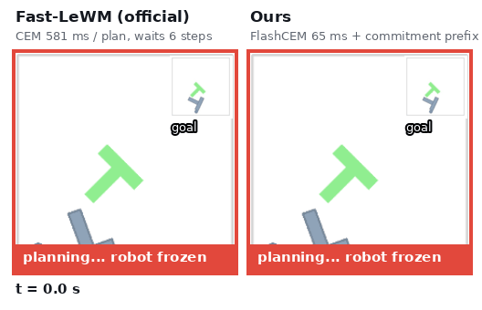
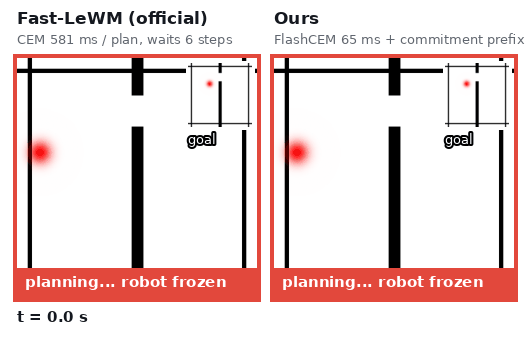
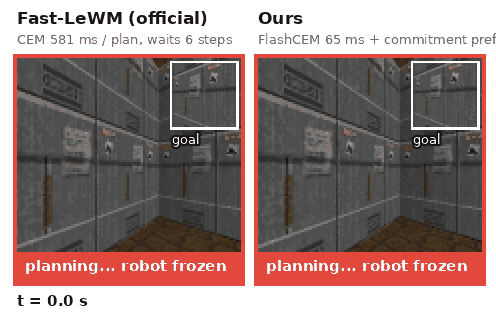
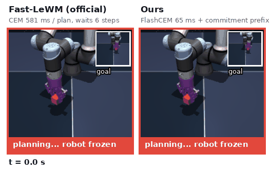
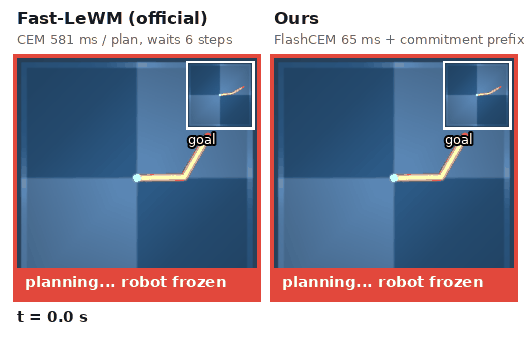
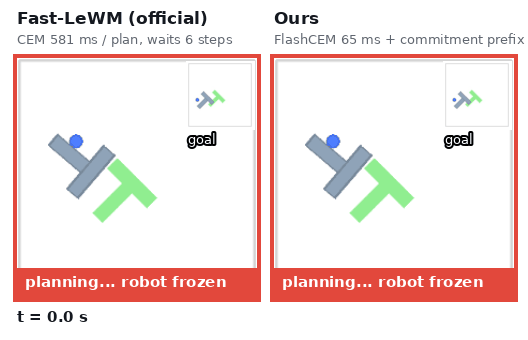
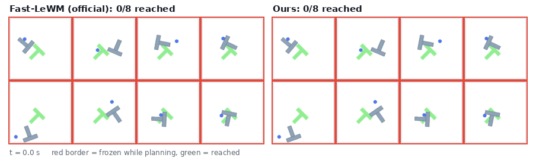
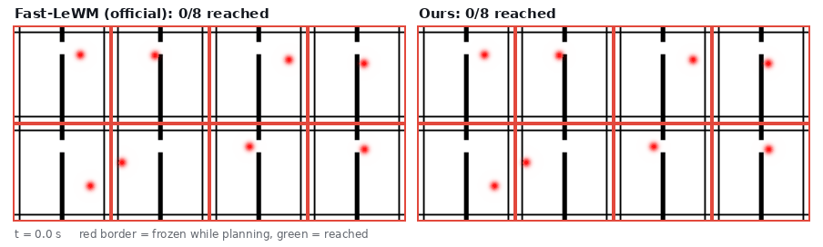
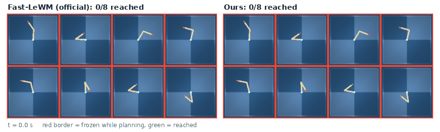
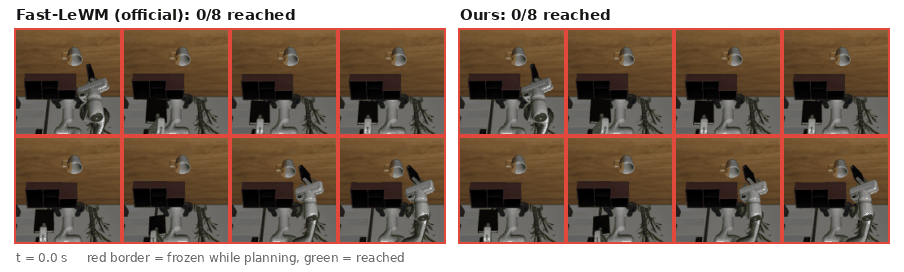

A latent world model is only useful in real time if the robot keeps moving while it thinks. We make planning with LeWorldModel-style JEPA world models 9× faster and let the robot act during planning, without retraining the model.
Work in progress. Built on the official Fast-LeWM code and checkpoints.

Real-time playback, 1 environment step = 0.1 s. The goal image (inset) changes at 0.8 s. Episodes in the large GIFs were picked where our method succeeds; the uncurated first eight episodes are further down.
RTX A6000, median of 20 plans, image encoding included. Measured while other jobs shared the machine, so both numbers are conservative.
Three changes to the planner, all at test time. The world model and its weights are untouched.
The official solver re-encodes the current and goal images inside every CEM iteration, which is 63% of its time. We encode once, cache the two latents, and compile the whole CEM iteration into one graph. Plans are unchanged: closed-loop success on 1010 Push-T episodes is 88.9% against 89.0%.
While a plan is being computed the robot keeps executing the queued action block. Every candidate is forced to start with that block, so the search only optimises what comes after it, and the next plan is ready before the queue runs out. Replanning every block costs no waiting.
The action-prefix predictor already returns the latent after every prefix length. We score a candidate by its closest approach to the goal, min_k ‖ẑ_k − z_goal‖², instead of the distance at the end only. With frequent replanning the terminal cost keeps pushing the arrival time back; the min cost does not.
Each method pays its own measured planning time at 10 Hz: 6 frozen steps for the official solver and 1 for FlashCEM (Reacher: 13 and 3). Official deployment is the released planner: plan, freeze, execute all five blocks, repeat, terminal cost. Ours is FlashCEM + commitment prefix + prefix-min cost. Success within 50 steps; 300 episodes per environment (ViZDoom 500).
Each column adds one component to the previous one; numbers are paired differences in success (points, 95% bootstrap interval).
* Reacher, goal switch: with the official 13-step freeze the first plan is made after the switch at step 8, so it already aims at the new goal; with a 3-step freeze the first plan aims at the old goal and the robot then executes all five blocks of it. This favours the official deployment, so the Reacher gain is conservative. ViZDoom uses a model we trained; retrained with the official train.py it gives the same picture (ours − official deployment +14.6 static, +22.2 switch).
Left: official Fast-LeWM deployment. Right: ours. Red frame and banner = the robot is frozen waiting for a plan.








Long-horizon kitchen and living-room manipulation with a 7-DoF arm. LIBERO has no goal-image protocol, so we build one from the demonstrations: start from a demo state, the goal is the frame 25 steps later, success means every movable object is within 4 cm of its goal position (demo actions replayed from the same starts reach it 93% of the time). This is not the official language-task success rate. The base planner is weak here: under 20% with no latency, for our model and for one trained with the official train.py. The gains are real but small in absolute terms.
| Scenario | Zero planning time | Official deployment | Ours | Ours − official deployment |
|---|---|---|---|---|
| Static goal | 14.7 | 13.0 | 20.7 | +7.7 [+3.0, +12.7] |
| Goal switches at 0.8 s | 7.0 | 2.7 | 10.3 | +7.7 [+4.3, +11.3] |
Success (%) within 50 steps, 300 episodes, task STUDY_SCENE1 (book into the caddy), single-task model. Official solver 495 ms per plan (5 frozen steps), FlashCEM 64 ms (1 step). Ten-task results with a multi-task model are in the repository; there all methods stay below 10% and cannot be separated.

We ran the official eval.py unchanged (synchronous planning, no latency) on the four Fast-LeWM benchmarks. With the paper's seed we reproduce its numbers within 2 points. Averaged over ten seeds the official planner scores lower than the single-seed table suggests. Swapping in the prefix-min cost never hurts and adds 11 points on Reacher.
| Environment | Paper | Ours, seed 42 | Official cost, 10 seeds | Prefix-min, 10 seeds | Difference |
|---|---|---|---|---|---|
| Two-Room | 98 | 96 | 93.4 | 94.4 | +1.0 [−0.4, +2.4] |
| Reacher | 88 | 86 | 81.8 | 93.2 | +11.4 [+7.6, +15.2] |
| Push-T | 96 | 98 | 90.0 | 90.4 | +0.4 [−1.4, +2.2] |
| OGBench Cube | 80 | 78 | 72.6 | 74.4 | +1.8 [−1.2, +5.0] |
Success rate (%), 50 episodes per seed. Paper column: Table 1 of Fast LeWorldModel (arXiv 2606.26217).
Latency is converted to whole environment steps at an assumed 10 Hz. Results use one world-model seed per environment. On LIBERO-10 the base planner succeeds too rarely for the comparison to say much beyond the direction of the effect.
git clone https://github.com/GuihaiChen1998/flash-lewm
# measured planning time
python scripts/e10_latency.py pusht 20
# real-time closed loop, e.g. ours on Push-T with a goal switch (300 episodes)
python scripts/e9_realtime.py 250 RLpushtswitch clamp:1:1:30:min:switch sync:5:6:30:last:switch
# official eval.py with the prefix-min cost
FLASH_COST=min python scripts/official_eval.py --config-name=reacher seed=42 ...